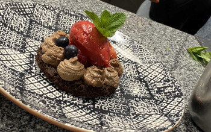
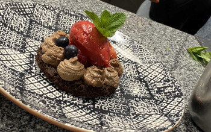
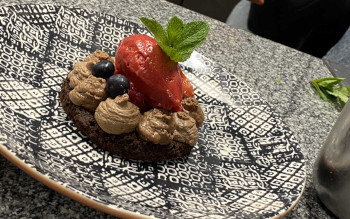

Indigo Restaurang & Bar öppnades av krögarparet Stig Grönlund och Björn Ekstrand våren 2004.
Björn fortsatte sin färd mot nya mål hösten 2012 och Stigs nya kollega sedan dess är den välkände
ålandsprofilen
Dennis Jansson.
Han driver även nattklubben Kino Nightclub och pizzerian Diablo som ligger vägg i vägg med Indigo.
Stig Grönlund är restaurangchef, sommelier och ansvarig för den dagliga driften av Indigo tillsammans med
Diana
Janson, som varit med sedan öppning 2004.
Kökschefen Otto Antman och kallskänksansvarige Elin Fellman ansvarar nu för köket. Tillsammans med vår
underbara
personal vill vi skapa en trivsam krog som man vill dröja sig kvar på.
Här ska man kunna njuta av god gastronomi, bra dryckesutbud och härlig stämning. Värme, kärlek och
hjärtlighet
är några av de värderingar som vi vill ska prägla ett besök hos oss.
Vårt kök har rötterna i den skandinaviska matlagningen.
Stig jobbade ju trots allt med Mathias Dahlgren, som då drev Bon Lloc, i över 6 år.
Så det har satt sina spår eftersom Mathias är en förespråkare av skandinavisk matlagning och enligt oss en
av
världens absolut bästa kockar och matkreatörer.
Vi älskar också klassisk fransk matlagning och gillar allt från asiatiskt och amerikanskt till italienskt
och
spanskt, så vårt kök kan beskrivas som ett modernt kök där klassiska smaker och välkända rätter presenteras
i
nya sammanhang.
Vi värnar om de åländska traditionerna och handlar helst närodlat och lokalt. Vi har gott samarbete med
bland
annat det lokala mejeriet ÅCA (troligtvis världens godaste smör), lokala fiskhandlare, Stigs bror Kent som
är
äppelodlare och Ålands trädgårdshall.
Men vi gillar också små gårdsmejerier i Sverige som vi köper ost av.
Men det måste väl klassas som lokalt tycker vi. Gott är det i alla fall.
Vår matsal ligger på entréplanet och rymmer sammanlagt 80-100 sittande gäster.
Vi serverar lunch vardagar klockan 11.00-15.00 och à la carte måndag-lördag från klockan 17.00.
Matsalen har en trivsam och varm atmosfär med de gamla tegelväggarna som ramar in den fina omgivningen.
Vi rekommenderar att boka bord. I alla fall på helgerna.
På Indigos övrevåning finns en bar med härlig atmosfär. Här serveras lunch på vardagarna och vår bistromeny
kvällstid onsdag-lördag.
Baren är tänkt som ett utvidgat vardagsrum där alla ska känna sig välkomna.
Här är det lätt att trivas och extra festligt blir det då vi har någon kompis som spelar skivor vilket
oftast
inträffar på helger eller då det är något framträdande på vår lilla scen.
Det är barchef Déborah-salomé Naudy tillsammans med Oskar Murtonen som är ansvariga över baren och dess
drift.
Vi kan också erbjuda skräddarsydda helhetslösningar för events av alla former som till exempel
föreläsningar,
presskonferenser, workshops, konstutställningar och helt vanliga kalas.
Vi kan ta emot drygt 200 gäster och har plats för cirka 100 sittande gäster lite beroende på möblering. Vi
har
också ett helt separat rum med upp till 10 sittplatser.
Eva-Jo Hancock och hennes make Icke från Rabalder Production Ab har hjälpt oss med senaste ombyggnaden.
Lampor,
inredning och möbler har valts med stor omsorg och den fina väggmålningen i vårt separata rum tycker vi
extra
mycket om.
Det tog nästan en vecka för Eva-Jo att måla den. Men det var öppet så det blev många avbrott då vi hade
gäster
samtidigt.
Sommartid öppnar vi vår härliga uteplats på innergården med 150 sittplatser och en stor bar. Det finns skjutdörrar och värmare som gör platsen extra trivsam från tidig sommar då det ännu inte blivit så varmt. Här serveras mat från klockan 11.00 måndag - fredag och kl 17 på lördagar och vi håller baren öppen till klockan 02.00 så det finns alltid anledning för ett besök vare sig det gäller lunch, middag, fika eller ett glas rosé. Här samlas unga hippa, gamla rävar, barnfamiljer och alldeles vanligt folk för att umgås, festa och äta gott.
